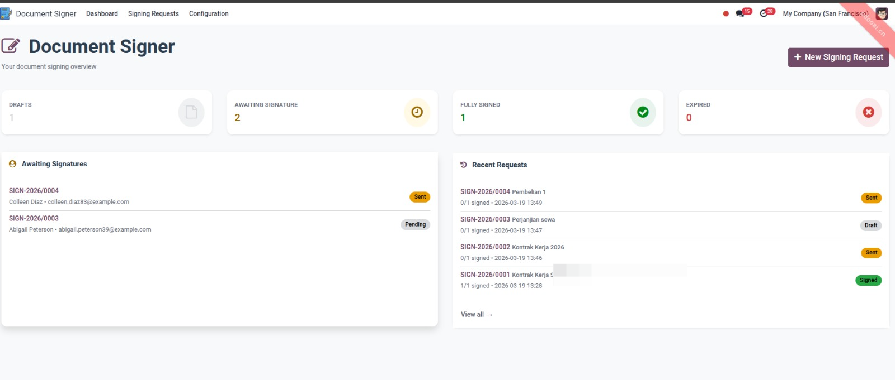
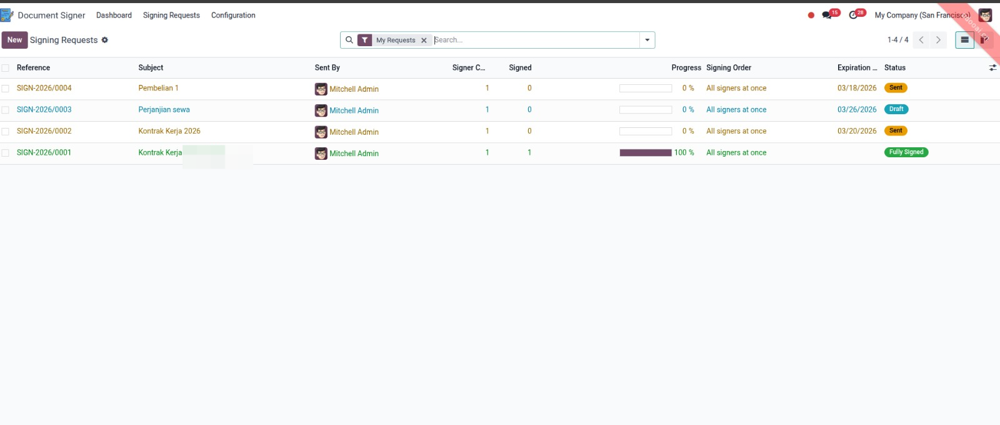
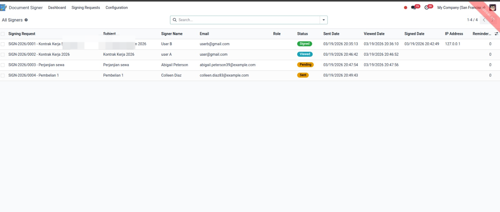
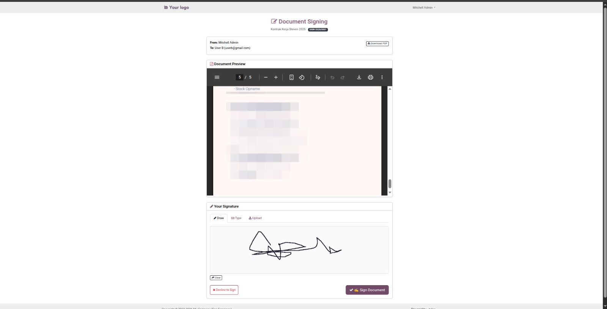
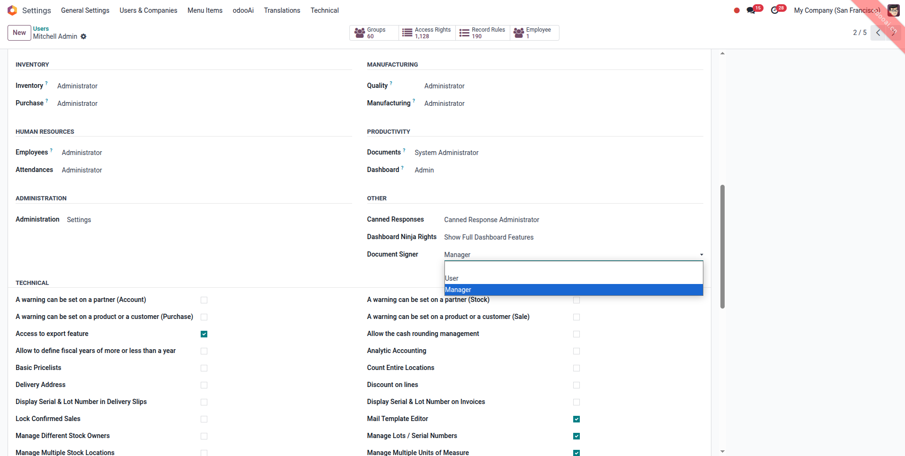

Stop printing, scanning, and mailing documents just to get a signature. Document Signer lets you send any PDF for digital signature directly from Odoo — no external service needed. Signers receive a secure email link, sign from any device, and you get instant notifications.
Upload any PDF document, add multiple signers with email addresses, and send signature requests with one click. Each signer receives a unique secure link.
Signers can draw their signature on a canvas, type their name (rendered in a handwriting font), or upload a signature image. Works on desktop & mobile.
Choose Simultaneous (all signers at once) or Sequential (one after another in order). Sequential mode auto-sends to the next signer after each signature.
Beautiful real-time dashboard built with Odoo 18 OWL framework. See stats at a glance: drafts, pending, signed, expired. Quick access to recent requests and pending signatures.
Beautiful HTML emails with signing buttons. Automatic reminder emails for pending signatures. Completion notification when all signers have signed.
Set expiration dates on signing requests. Enable automatic reminder emails with configurable reminder days. Automated cron jobs handle expiration and reminders.
Every signature is stored with timestamp, IP address, and user agent. Token-based portal access — no login required for external signers. Record rules for multi-company environments.
Track each signer's status: Sent > Viewed > Signed. Progress bar on each request shows overall completion.
| 1 |
Create Request Upload a PDF and add signer email addresses with optional roles. |
| 2 |
Send for Signing Click "Send for Signing" — each signer gets a beautiful email with a secure link. |
| 3 |
Sign Online Signers click the link, preview the PDF, and sign using draw/type/upload. |
| 4 |
Done! Signed document is stored as an attachment. All parties are notified. |
Your signers get a clean, professional signing page — no Odoo login required. Works perfectly on desktop, tablet, and mobile devices.
Sign by drawing with mouse or finger on touch devices.
Type your name — rendered in a beautiful handwriting font.
Upload your signature image (PNG, JPG).